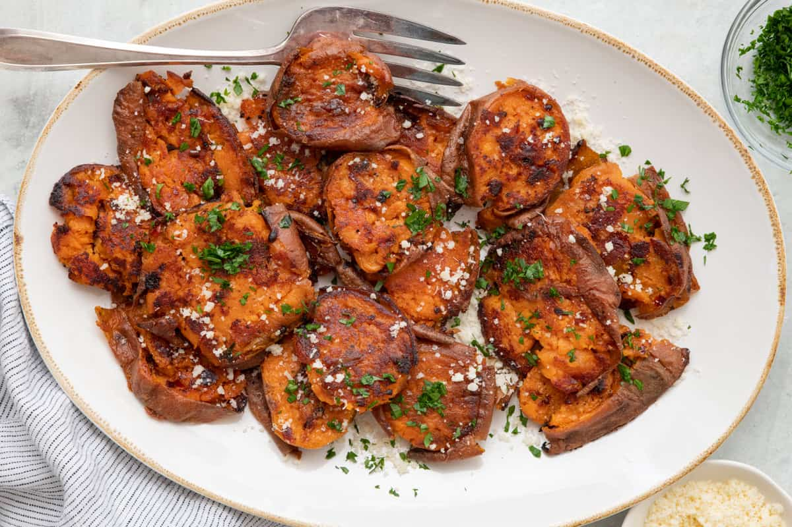

Smashed Sweet Potatoes
What is the hype with smashing potatoes? It is the thin edges that get all crispy in the oven because of the wider, thinner surface area. While you can not find baby sweet potatoes like you can with regular potatoes, you can easily slice sweet potatoes into smaller pieces before cooking and smashing them!

PREP. TIME: 10 min. | COOK TIME: 45 min. | SERVINGS: 6 servings
FINAL STEP: Sprinkle parsley on top, and you're ready to serve!

Store leftovers in an airtight container in the fridge. Reheat smashed sweet potatoes in a 375˚F. preheated oven for 10-15 minutes until warmed through. You can also heat them up in a skillet on the stovetop with a little bit of butter or oil over medium heat until warmed through.
The skin is a big part of this dish as it adds a deliciously crispy texture. It is recommended you leave the skin on and scrub it well before boiling to ensure it is clean. That being said, you can peel them beforehand but you will not get that crispy texture.
Leftovers will last in the fridge for about 4-5 days. They will not be as crispy after being reheated, but they will still taste delicious. Enjoy as leftovers or make into a yummy sweet potato hash. Add some diced onions and breakfast meats like turkey sausage to the skillet before reheating.
freezing smashed sweet potatoes is not recommended as they will lose their texture when thawing. However, if you do choose to freeze them, make sure they are fully cooled beforehand to limit moisture content and store them in a freezer-safe container.
N.B. Nutrition information provided is an estimate. It will vary based on cooking method and specific ingredients used.